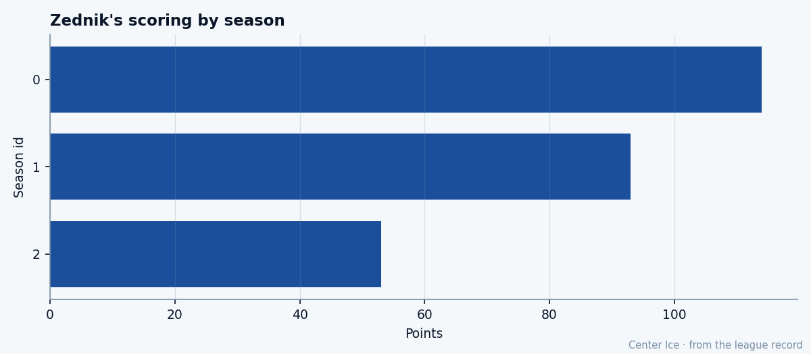

The Captain: Richard Zednik and the Weight of the C
Two days ago he turned 30. The Bureau has his speed at 87 and his face at 50, and he wears the C at Montreal, where they have 13 wins and a $7.33M problem.
 Tomáš VránaProfile writer · The Sweater
Tomáš VránaProfile writer · The Sweater Richard Zednik81 turned 30 on January 6. Two days later he is the captain of the
Richard Zednik81 turned 30 on January 6. Two days later he is the captain of the  Montreal Canadiens, a man with 53 points in 40 games and a pace of 109, and three of the Bureau's 22 attributes sit at 50, the floor of the Book. Speed 87. Face 50. Fighting 50. Durability 50. He has played 40 of 41 games this season.
Montreal Canadiens, a man with 53 points in 40 games and a pace of 109, and three of the Bureau's 22 attributes sit at 50, the floor of the Book. Speed 87. Face 50. Fighting 50. Durability 50. He has played 40 of 41 games this season.
The C came to him at some point the record does not carry. He arrived in Montreal before the record opened, and the transaction that put him there happened in March 2001, when Washington traded him and  Jan Bulis76 to the Montreal Canadiens for Trevor Linden and a package including a second-rounder. He has been there ever since. He is the fastest man on the roster by the Bureau's numbers: 87 in speed, 87 in acceleration, 87 in agility. Nobody else on the Canadiens carries three 87s.
Jan Bulis76 to the Montreal Canadiens for Trevor Linden and a package including a second-rounder. He has been there ever since. He is the fastest man on the roster by the Bureau's numbers: 87 in speed, 87 in acceleration, 87 in agility. Nobody else on the Canadiens carries three 87s.
FACE 50 means he wins none of his draws. FIGH 50 means nobody wants to fight him. INJU 50 means the Bureau expects him to miss time. His one injury on record is a hip that kept him out from late January 2005 to early March 2005. He has played through 40 of 41 this year and the hip has not returned. But the Bureau's grade says it will.

He was drafted 249th overall in 1994, a ninth-rounder out of Bystrica, Slovakia, who played junior hockey for the Portland Winter Hawks and scored 35 goals as a rookie with them in 1994-95. He made his professional debut in a single game with Washington at the end of 1995-96, then spent time in the AHL with Portland before the Capitals kept him for a first full season in 1997-98: 65 games, 17 goals. From there the line goes up. 114 points in 82 games at his peak. 93 points in 62 last season. 53 in 40 this winter, which is a 109 pace.
On April 26, 2002, in a playoff game in Montreal against Boston, Bruins defenceman Kyle McLaren elbowed Zednik in the face. The injury drew comparisons to Clint Malarchuk's 1989 cut. That is the public record, canon, before the summer of 2004. The Bureau's FACE grade is 50. I put them on the same page.
He is on $7.33M with 4 years left. He will be 34 when the contract ends. The Montreal Canadiens are 13-14-8, 44 points, third in the Northeast, 20 points behind  Toronto Maple Leafs. They are not a playoff team right now and the arithmetic says they will not catch one. His morale is 94. He skates 23.0 minutes a night. The captain's name is on the front of the lineup card and the team around him has
Toronto Maple Leafs. They are not a playoff team right now and the arithmetic says they will not catch one. His morale is 94. He skates 23.0 minutes a night. The captain's name is on the front of the lineup card and the team around him has  Jose Theodore87 at 87 and Mike Komisarek81 at 81 and a first-rounder named Tuomo Pihlman78 who is somewhere else entirely.
Jose Theodore87 at 87 and Mike Komisarek81 at 81 and a first-rounder named Tuomo Pihlman78 who is somewhere else entirely.
The Bureau's potential for Zednik is 76. His base grade is 87. He has been 11 grades past his ceiling for some time. He scored 114 in 82. He is running at 109 tonight. The number the Bureau gave him when he was a prospect says he is not supposed to be here, and he has been here for years.
What does a captain do at 44 points? Score. He has 29 goals in 40 games, which is the 13th-highest goal total in the league. The Montreal Canadiens have 99 goals as a team. He has 29 of them.
On the road they are 9-12 away, which is the club's problem. Zednik cannot fix that. He fixes what he can fix: goals, pace, minutes, the 23.0 a night the coach gives him and the C that sits on his sweater. He has 53 points and $7.33M and four years and three grades at the floor and a face that the Bureau says is worth nothing and a speed that the Bureau says is worth everything. He turned 30 two days ago. He is still scoring at a 109 pace, and the team still has 13 wins, and nobody is coming to trade for him at $7.33M with four years left on a man whose ceiling the Bureau set at 76.
Richard Zednik has played 40 of 41 games. The hip is quiet. The face is 50. The speed is 87. The C is on his sweater.